Preparación de las herramientas de implementación, generación de un medio de arranque y pruebas en VirtualBox. Base para la automatización del despliegue de imágenes de Windows.
WINPE X64WINDOWS ADKVIRTUALBOX16 CAPTURAS
01
ACTIVIDAD 1.8
Objetivo y entorno del laboratorio
Objetivo: construir una ISO de Windows PE de 64 bits y arrancarla en VirtualBox. WinPE es un entorno temporal de mantenimiento y despliegue. En esta práctica se ejecuta desde la ISO y la RAM; el disco virtual queda vacío para la actividad 9.
Windows de trabajo→ ADK + WinPE→ ISO→ VirtualBox→ Comprobaciones
El equipo físico con Windows 10 se ha utilizado para instalar las herramientas y crear la ISO. En ese mismo equipo, VirtualBox ejecuta la máquina WINPE-LAB, donde se prueba el arranque de WinPE.
Equipo de trabajo: Windows 10 de 64 bits con permisos de administrador, conexión a Internet y espacio libre para instalar herramientas.
Máquina de pruebas configurada: 4 GB de RAM, 2 procesadores virtuales y disco VDI dinámico de 64 GB. Estos recursos se han elegido para el laboratorio y su reutilización en la actividad 9; no representan los requisitos mínimos de WinPE.
Conservar la ISO, el directorio de trabajo y el disco virtual para la actividad 9.
Resultado de la práctica: ISO creada y conectada a VirtualBox, WinPE arrancado y disco y red comprobados. Las 16 capturas documentan el proceso. El despliegue de Windows se realizará en la actividad 9.
02
ACTIVIDAD 1.8
Instalar ADK y el complemento WinPE
Abrir la página oficial de descargas del ADK desde el Windows 10 del equipo físico. Para este laboratorio x64, la referencia de descarga consultada es ADK 10.1.26100.9457 (septiembre de 2026), junto con su complemento WinPE de la misma versión. La versión concreta del instalador se identifica en las capturas; la numeración del sistema WinPE no equivale necesariamente a la revisión del instalador. Aplicar el parche de mantenimiento que indique Microsoft para esa edición. No elegir la rama específica de ARM64.
Descargar los dos instaladores: Windows ADK y Windows PE add-on.
Ejecutar el ADK, seleccionar la instalación en este equipo y conservar la ruta predeterminada.
En componentes, seleccionar Deployment Tools / Herramientas de implementación. Los demás componentes no son necesarios para esta práctica.
Esperar a la finalización y cerrar el instalador.
Instalar después el complemento Windows PE add-on de la misma versión y documentar su finalización.
Por qué se selecciona solo Herramientas de implementación: aporta DISM y el entorno de trabajo del ADK, necesario para usar las herramientas de preparación y generación de medios. El complemento WinPE se instala aparte y aporta la imagen base y sus archivos. Para construir esta ISO no hacen falta los demás componentes.
Las casillas indican qué componentes se instalarán. El panel derecho solo describe la opción seleccionada con el ratón: que aparezca su descripción no significa que su casilla esté marcada.
Cuándo se utilizan los otros componentes
El ADK agrupa herramientas para distintos trabajos. Se instalan las necesarias para el proyecto, no todas por defecto. La disponibilidad y el soporte de cada componente dependen de la versión del ADK y del entorno al que se destine.
Componente
Cuándo se utiliza
En esta práctica
Herramientas de implementación
Preparar, mantener y desplegar imágenes y medios de arranque.
Seleccionado
Compatibilidad de aplicaciones
Investigar incompatibilidades de programas al cambiar de sistema.
No necesario
Diseñador de imágenes y configuraciones (ICD) y Diseñador de configuración
Crear paquetes de aprovisionamiento para aplicar configuraciones a equipos.
No necesario
USMT
Migrar archivos y configuraciones de usuarios entre instalaciones.
No necesario
VAMT
Gestionar activación por volumen en una organización.
No necesario
Kit de herramientas de rendimiento de Windows
Recoger y analizar trazas para investigar arranque, lentitud y consumo de recursos.
No necesario
Kit de herramientas de evaluación de Windows
Ejecutar evaluaciones del rendimiento y comportamiento del equipo.
No necesario
Generador de plantillas UE-V
Preparar plantillas de ajustes de aplicaciones en entornos que utilicen UE-V.
No necesario
Herramientas App-V
Trabajar con el empaquetado y la virtualización de aplicaciones en entornos que utilicen App-V. Comprobar antes su soporte.
No necesario
Media eXperience Analyzer
Analizar incidencias de rendimiento multimedia.
No necesario
Herramientas de confianza de cadena de suministro
Escenarios especializados de evaluación de la cadena de suministro de dispositivos; requieren un procedimiento específico.
No necesario
Complemento Windows PE
Obtener los archivos base para crear WinPE.
Instalado por separado
CAPTURA 1media/act8-01-descargas.PNG
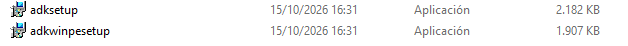
▧Descargas oficiales
Página de Microsoft con los enlaces del ADK y el complemento WinPE de la misma versión.
IMAGEN NO ENCONTRADA
Descargas oficiales
CAPTURA 2media/act8-02-adk-componentes.PNG
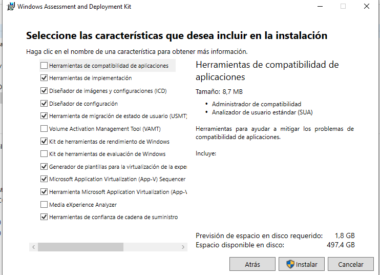
▧Componentes del ADK
Instalador con Deployment Tools / Herramientas de implementación seleccionado.
IMAGEN NO ENCONTRADA
Componentes del ADK
CAPTURA 3media/act8-03-adk-instalado.PNG
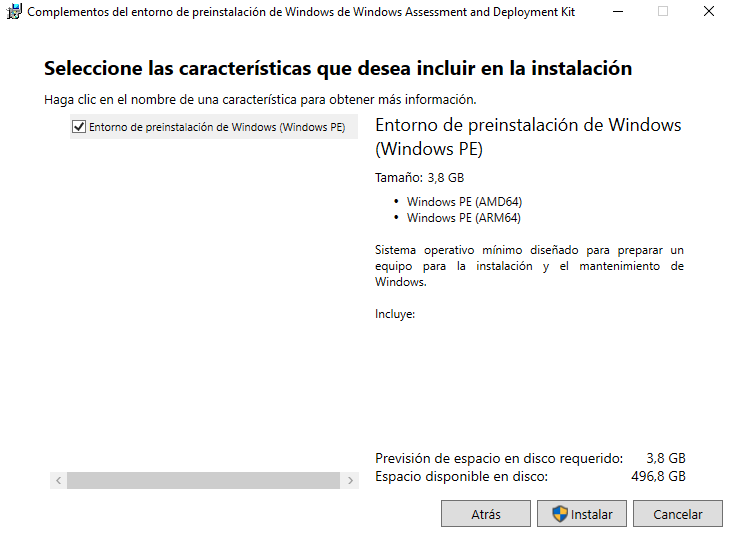
▧ADK instalado
Pantalla de finalización correcta del instalador del ADK.
IMAGEN NO ENCONTRADA
ADK instalado
CAPTURA 4media/act8-04-winpe-instalado.PNG
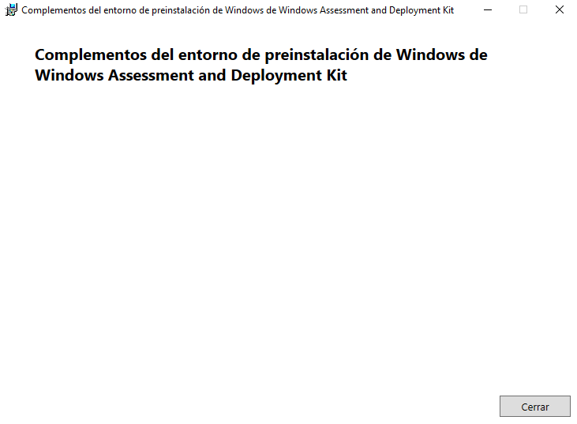
▧Complemento WinPE instalado
Finalización correcta del instalador de Windows PE add-on.
IMAGEN NO ENCONTRADA
Complemento WinPE instalado
03
ACTIVIDAD 1.8
Crear los archivos de trabajo
Buscar en Inicio Deployment and Imaging Tools Environment o Entorno de herramientas de implementación y creación de imágenes.
Abrirlo con Ejecutar como administrador. Usar esta consola preparada por el ADK para los comandos siguientes.
Crear el conjunto de archivos de WinPE:
copype amd64 C:\WinPE_amd64
El destino debe ser un directorio nuevo. Si ya existe de un intento anterior, revisar su contenido antes de reutilizarlo o escoger otro nombre de forma coherente para todos los comandos. amd64 identifica la arquitectura x64 tanto para procesadores Intel como AMD.
En el Explorador se comprueba que se han creado media, mount y bootbins. media contiene los archivos de la ISO, mount sirve como punto de montaje para personalizar la imagen y bootbins contiene archivos auxiliares de arranque. En media\sources debe estar boot.wim, la imagen de arranque.
Comprobación: copype termina sin errores y los archivos de trabajo existen. La consola normal no configura necesariamente las rutas de estas herramientas.
CAPTURA 5media/act8-05-entorno-administrador.PNG
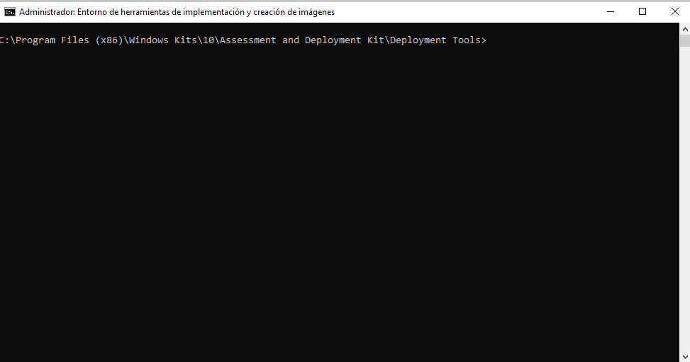
▧Entorno de implementación
Deployment and Imaging Tools Environment abierto como administrador.
IMAGEN NO ENCONTRADA
Entorno de implementación
CAPTURA 6media/act8-06-copype.PNG
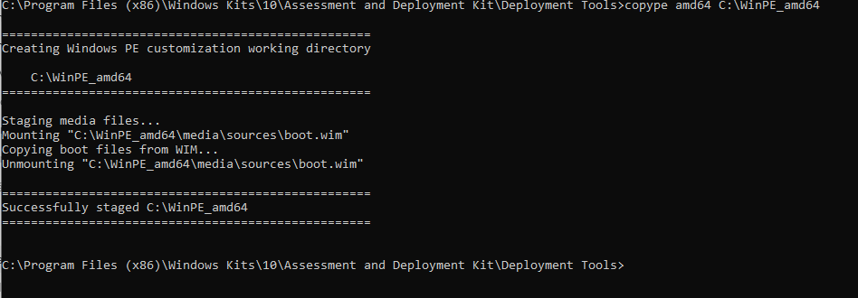
▧Archivos de trabajo creados
Comando copype y su resultado sin errores.
IMAGEN NO ENCONTRADA
Archivos de trabajo creados
CAPTURA 7media/act8-07-archivos-trabajo.PNG
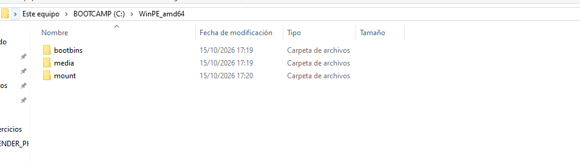
▧Estructura de WinPE
Carpeta C:\WinPE_amd64 con media y mount visibles.
IMAGEN NO ENCONTRADA
Estructura de WinPE
04
ACTIVIDAD 1.8
Generar la ISO de WinPE
En el mismo entorno elevado del ADK, generar la ISO con un nombre estable para este laboratorio. Con el ADK seleccionado usaremos el gestor de arranque firmado con Windows UEFI 2023 CA:
Esperar al mensaje de finalización. Abrir C:\WinPE_amd64 y verificar que WinPE_ASIX.iso existe y tiene un tamaño distinto de cero. Si aparece un error, no continuar hasta revisarlo.
El parámetro /bootex requiere un ADK compatible. La ISO debe ser compatible con el firmware y su configuración de confianza. En este laboratorio usaremos EFI sin exigir Secure Boot; no se cambian los ajustes del equipo físico.
En esta práctica la ISO se ha generado directamente en Windows 10, el anfitrión de VirtualBox, por lo que no ha sido necesario transferirla desde otra máquina. La unidad óptica virtual utiliza el archivo WinPE_ASIX.iso guardado en el equipo físico.
CAPTURA 8media/act8-08-crear-iso.PNG
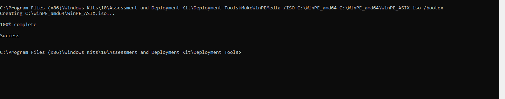
▧Creación de la ISO
MakeWinPEMedia finalizado correctamente.
IMAGEN NO ENCONTRADA
Creación de la ISO
CAPTURA 9media/act8-09-iso-creada.PNG
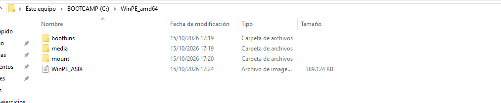
▧ISO preparada
WinPE_ASIX.iso visible en el Explorador con tipo y tamaño.
IMAGEN NO ENCONTRADA
ISO preparada
05
ACTIVIDAD 1.8
Preparar la máquina de pruebas
En VirtualBox crear la máquina WINPE-LAB, tipo Microsoft Windows y versión de 64 bits. Omitir la instalación desatendida si el asistente la ofrece.
Se han asignado 4096 MB de RAM, 2 CPU y un VDI dinámico de 64 GB. El disco crece según los datos almacenados, hasta ese límite; ahora permanece vacío.
Con la máquina apagada, activar EFI en Sistema. Mantener el mismo modo para el despliegue futuro.
Usar una controladora SATA para el disco y una unidad óptica virtual para la ISO. Configurar el adaptador de red en NAT, con cable conectado. Si se permite elegir el modelo, usar Intel PRO/1000 MT Desktop para esta prueba.
En Configuración → Almacenamiento, seleccionar la unidad óptica, elegir un archivo de disco y conectar WinPE_ASIX.iso desde el anfitrión.
Priorizar la unidad óptica en el arranque donde el firmware lo permita. Iniciar la máquina y, si aparece el aviso de arranque desde CD/DVD, pulsar una tecla.
Comprobación: se abre WinPE y su consola. El disco permanece sin instalar ni formatear. Si se abre una consola EFI, revisar que la ISO está conectada y arrancar la unidad óptica desde el menú del firmware.
CAPTURA 10media/act8-10-maquina-virtual.PNG
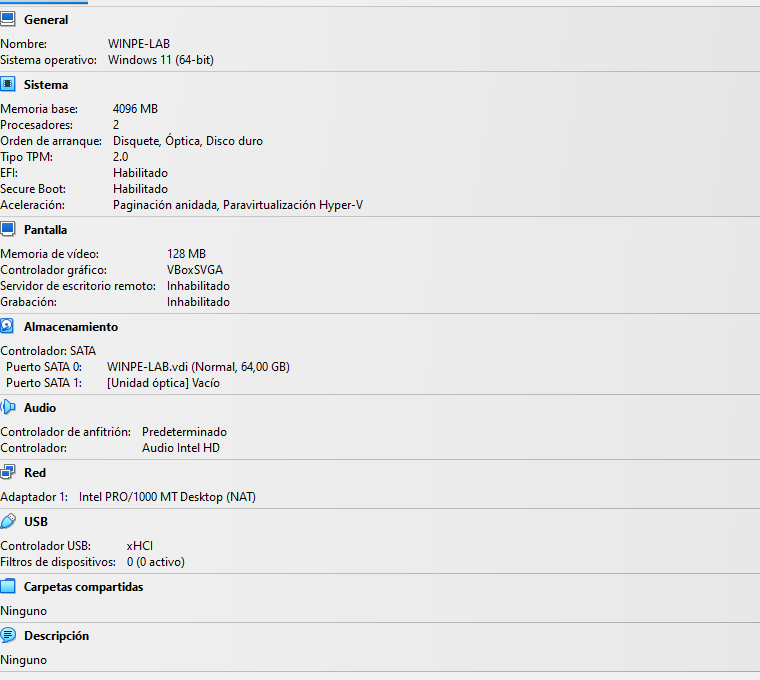
▧Máquina virtual de pruebas
Resumen de WINPE-LAB con 4 GB de RAM, 2 CPU y disco de 64 GB.
IMAGEN NO ENCONTRADA
Máquina virtual de pruebas
CAPTURA 11media/act8-11-configuracion.PNG
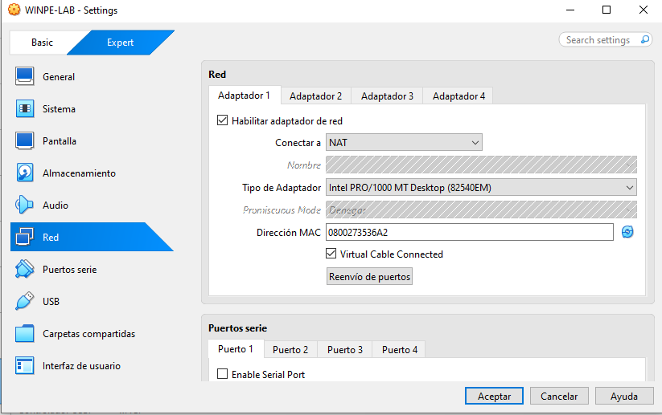
▧Firmware y red
Resumen de VirtualBox con EFI y adaptador NAT; comprobar ambos ajustes.
IMAGEN NO ENCONTRADA
Firmware y red
CAPTURA 12media/act8-12-iso-montada.PNG
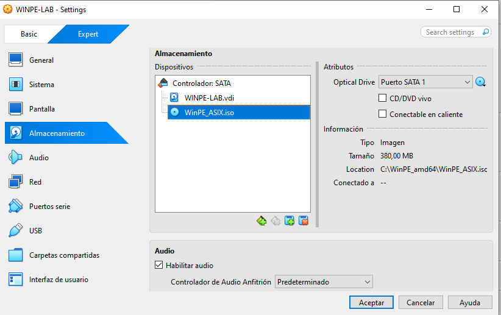
▧ISO conectada
Almacenamiento de WINPE-LAB con WinPE_ASIX.iso en la unidad óptica.
IMAGEN NO ENCONTRADA
ISO conectada
06
ACTIVIDAD 1.8
Arrancar y comprobar WinPE
Esperar a que termine la inicialización automática. En la consola de la máquina de pruebas ejecutar:
ver
La consola suele situarse en X:\Windows\System32. X: corresponde al entorno cargado en RAM; no es el disco donde desplegaremos Windows.
Comprobar el almacenamiento con comandos de consulta:
diskpart
list disk
list volume
exit
En esta actividad no ejecutar clean, format ni comandos de particionado. La ausencia de una letra de unidad para el disco vacío es normal. Comparar el tamaño detectado con el VDI creado.
Inicializar la red y consultar su configuración:
wpeutil InitializeNetwork
ipconfig /all
Comprobar que aparece un adaptador con dirección IPv4, máscara y puerta de enlace asignadas por NAT. Si solo aparece una dirección 169.254.x.x o no existe adaptador, revisar cable virtual, DHCP y compatibilidad del controlador. La configuración IP no demuestra por sí sola acceso a Internet.
Por último, comprobar que DISM está disponible:
dism /?
Esto comprueba la presencia de la herramienta; no aplica todavía ninguna imagen. PowerShell no se presupone disponible en WinPE básico.
Resultados de las comprobaciones
Prueba
Resultado
Interpretación
Arranque y comando ver
Microsoft Windows, versión 10.0.26100.1
WinPE ha arrancado desde el medio; el número corresponde al entorno de la ISO, no al Windows 10 anfitrión.
DiskPart: list disk
Disco 0, Online, 64 GB de tamaño y 64 GB libres
El disco virtual está reconocido y no tiene particiones. No se ha formateado ni desplegado Windows.
DiskPart: list volume
Unidad D:, DVD_ROM, UDF, CD-ROM, 380 MB, Healthy
La ISO está conectada y se reconoce como medio óptico. No es un volumen instalado en el disco de 64 GB.
Adaptador de red
Intel PRO/1000 MT Desktop; DHCP habilitado
WinPE reconoce la tarjeta virtual y obtiene configuración automáticamente.
Dirección IPv4 y máscara
10.0.2.15 / 255.255.255.0
Configuración coherente con la red NAT del laboratorio.
Puerta de enlace y servidor DHCP IPv4
10.0.2.2
Se ha recibido la configuración del entorno NAT de VirtualBox. Esta prueba no demuestra por sí sola acceso a Internet.
DISM /?
Consulta de la ayuda de DISM, documentada en la captura 16
Se comprueba la disponibilidad de la herramienta; no se ha aplicado ninguna imagen de Windows.
CAPTURA 13media/act8-13-arranque.PNG
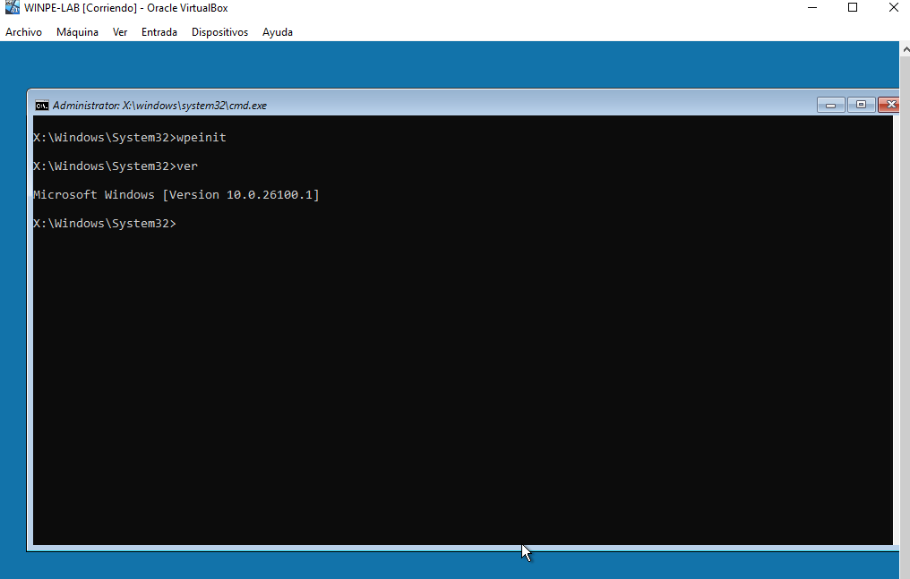
▧Arranque de WinPE
Consola de WinPE iniciada y salida del comando ver.
IMAGEN NO ENCONTRADA
Arranque de WinPE
CAPTURA 14media/act8-14-disco.PNG
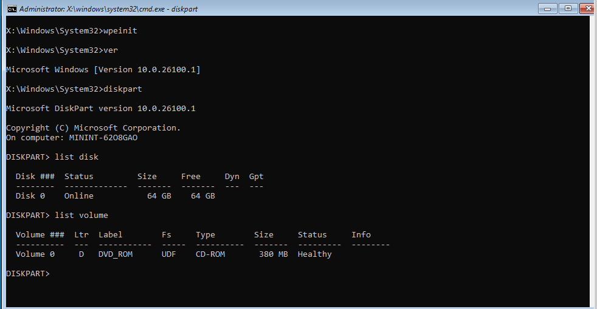
▧Disco detectado
DiskPart con list disk y list volume, sin modificar el disco.
IMAGEN NO ENCONTRADA
Disco detectado
CAPTURA 15media/act8-15-red.PNG
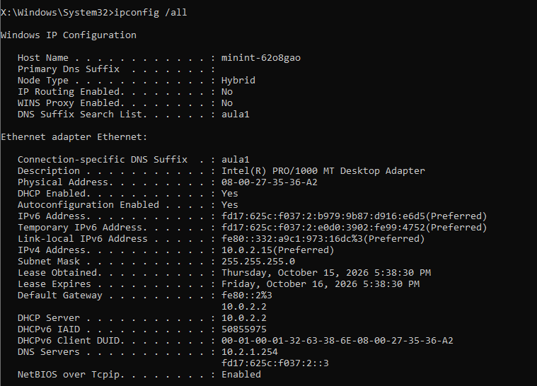
▧Configuración de red
Salida de ipconfig /all después de inicializar la red.
IMAGEN NO ENCONTRADA
Configuración de red
CAPTURA 16media/act8-16-dism.PNG
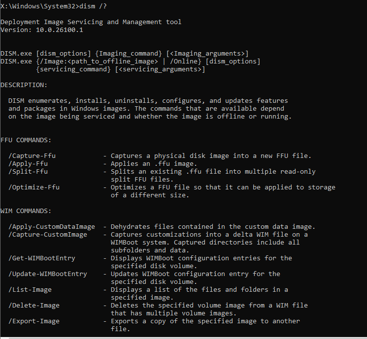
▧Herramientas de implementación
Salida de DISM /? mostrando que la herramienta está disponible.
IMAGEN NO ENCONTRADA
Herramientas de implementación
07
ACTIVIDAD 1.8
Conservar el entorno para el despliegue
Guardar las pruebas y apagar WinPE de forma ordenada:
wpeutil shutdown
Conservar WinPE_ASIX.iso, C:\WinPE_amd64 y la máquina WINPE-LAB. El disco vacío se utilizará en la siguiente actividad para automatizar el despliegue de Windows. Si se retira la ISO ahora, es normal que la máquina no encuentre un sistema instalado.
Conclusión: se ha creado una ISO de WinPE desde Windows 10 y se ha arrancado en la máquina WINPE-LAB. Las comprobaciones muestran el disco virtual de 64 GB sin particionar, la ISO de 380 MB y un adaptador Intel PRO/1000 con IPv4 10.0.2.15. Se conserva el entorno para automatizar el despliegue de Windows en la actividad 9.
Actividad 9 · Automatización del despliegue de imágenes WIN: reutilizaremos este entorno para preparar el disco y aplicar una imagen de Windows. Esa fase todavía no se ejecuta.
miguel@asix:~$ status act08 [READY] ISO creada y arrancada en VirtualBox [READY] Disco y configuración de red comprobados [READY] Procedimiento y 16 capturas documentados [NEXT] act09 · Automatización del despliegue de imágenes WIN